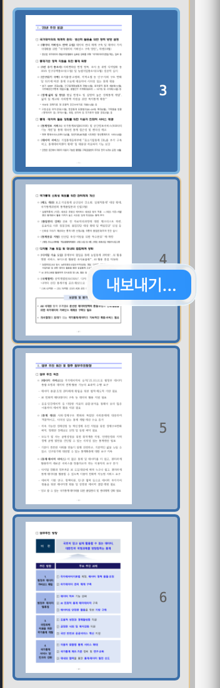
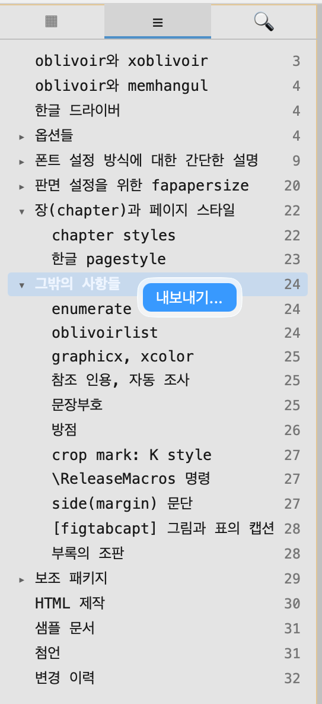
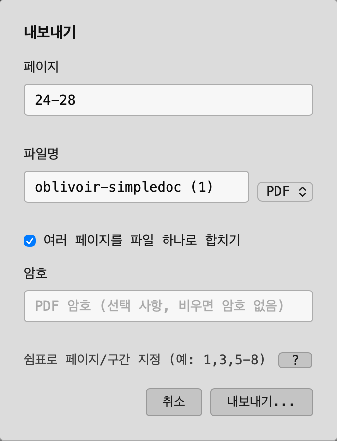

Export pages
A table for a slide deck, a figure for a blog post — you don't need a separate screenshot tool to pull a whole page out as an image or PDF. File → Export, or the :export command, handles it directly.
Formats
PNG, JPG, and PDF are all supported. Multiple pages save as separate, numbered files by default; turn on "merge" and images get stitched into one tall image, or PDF pages get combined into a single file.
Picking pages
There are three ways to choose which pages to export.
| Type a page spec | e.g. 1-3,7-8,20-22 |
| Multi-select thumbnails | Cmd+click / Shift+click thumbnails in the sidebar and the export spec fills in automatically |
| Select a table-of-contents section | Click a heading in the outline panel, then open Export — that section's page range (including subsections) fills in automatically |



PDF passwords
Exporting to PDF can set a password at the same time. On the command line, add the -p flag: :export -p [pagespec] <path.pdf>.
Where it saves
By default, exports land in the same folder as the source document. If a file with the same name already exists, Vimong asks before overwriting it.